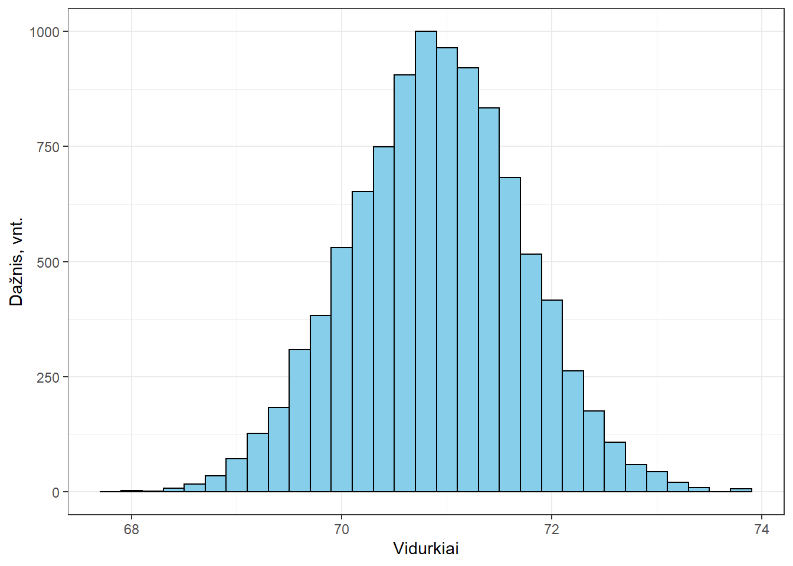
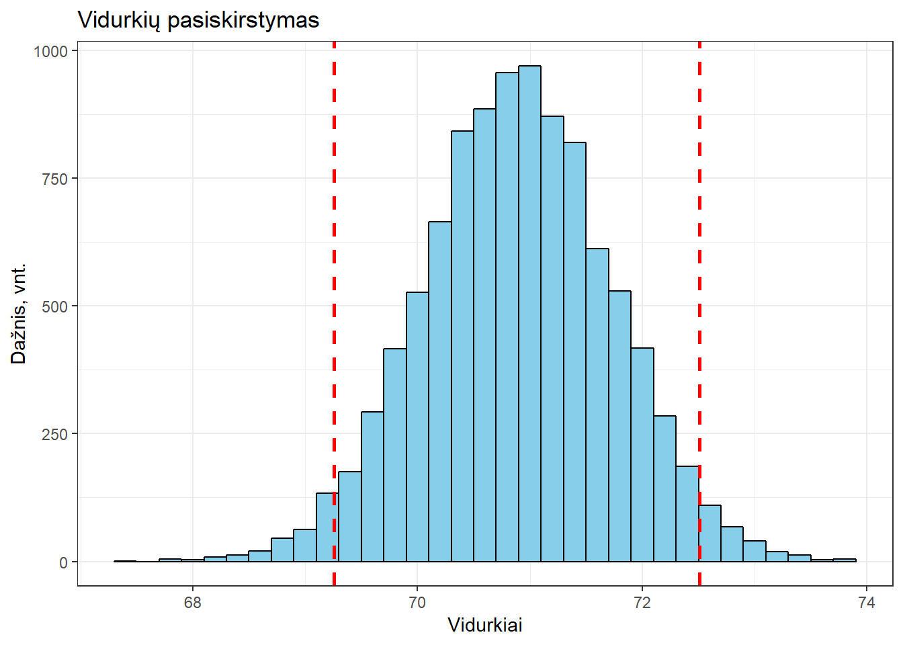
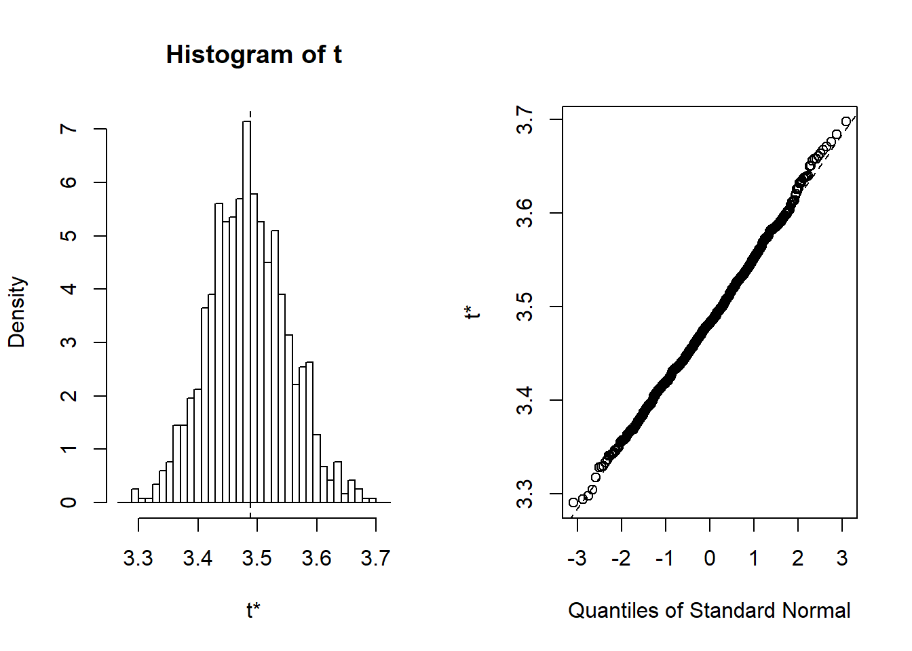
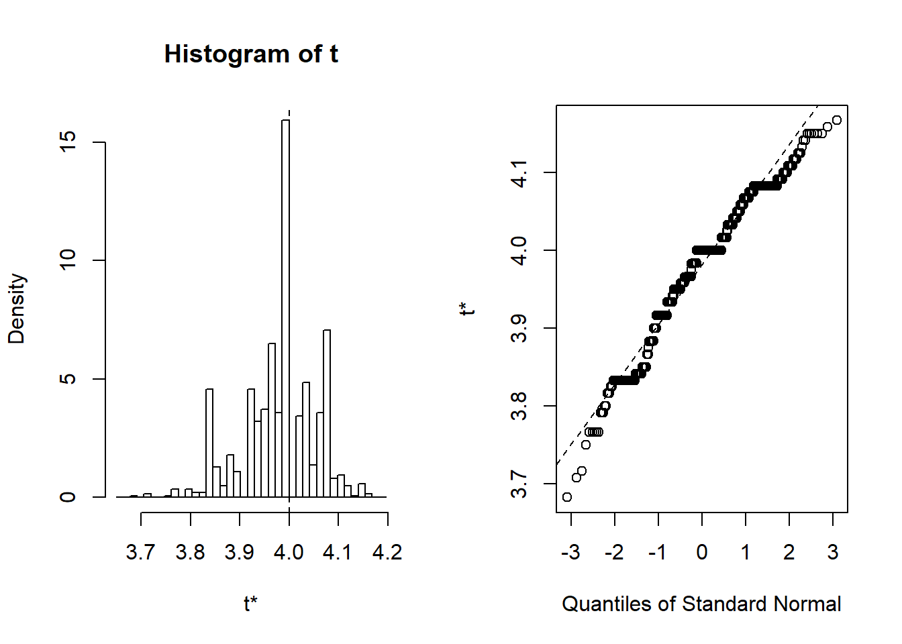

13. Pasikliautinieji intervalai savirankos metodais
Šio skyriaus medžiaga neįtraukta į šių metų kursą, todėl jos nenagrinėkite.
Statistinės išvados yra iš imties (kuri yra mažesnė už generalinę aibę) duomenų padarytos išvados apie visą generalinę aibę (GA). Tam, kad išvados būtų teisingos – pirmiausia, imtis privalo būti reprezentatyvi: sudaryta tinkamu būdu taip, kad atspindėtų esmines generalinės aibės savybes. Tada pagal duomenis ir iškeltą klausimą reikia pasirinkti tinkamą analizės metodą. Beje, daugelis statistikos metodų sukurti darant prielaidą, kad GA yra be galo didelė. Tad mūsų GA turi būti pakankamai didelė, kad ši prielaida galiotų.
Statistinių išvadų darymo metodų grupės:
- statistinių kriterijų taikymas (t. y., statistiniai testai);
- taškinių įverčių skaičiavimas;
- pasikliauties intervalų (t. y., intervalinių įverčių) skaičiavimas.
Pasikliauties intervalai dar vadinami pasikliautinaisiais intervalais.
Šio užsiėmimo metu nagrinėsime pasikliauties intervalų (PI) sudarymo metodus.
Darbui reikalingi reikalingi R paketai: boot, DescTools, pander, RcmdrMisc, car, ggplot2, tidyverse.
13.1 Paketas DescTools
Šis trumpas skyrelis skirtas tam, kad sužinotumėte, kad daugelio parametrų (vidurkio, proporcijos ir t.t.) pasikliautiniesiems intervalams (klasikiniais ir savirankos būdais) skaičiuoti skirtas funkcijas galite rasti pakete DescTools. Funkcijų pavyzdžiai:
DescTools::MeanCI(x)
DescTools::MeanDiffCI(x, y)
DescTools::MedianCI(x)
DescTools::PoissonCI(x)
DescTools::VarCI(x)
DescTools::Gmean(x, conf.level = 0.95)
DescTools::Hmean(x, conf.level = 0.95)
DescTools::BinomCI(x, n)
DescTools::BinomDiffCI(x1, x2, n1, n2)
DescTools::MultinomCI(x)13.2 Savirankos metodai
Saviranka (angl. statistical bootstrap) – tai grąžintinis imies sudarymo būdas su pakartojimu. Savirankos metodai – tai neparametrinių (t.y., tuo teorinio skirstinio ir jo parametrų nepriklausomų) metodų šeima, skirta statistinėms išvadoms daryti.
13.3 Teorinė medžiaga
Teorinės medžiagos galite rasti:
- Procentilių savirankos metodas su paslinktumo ir asimetrijos korekcija (\(BC_a\)) pasikliauties intervalams (PI) skaičiuoti (anglų kalba);
- Savirankos būdu apskaičiuoti PI: tinkamas ir netinkamas taikymas (anglų kalba);
- Savirankos būdu apskaičiuoti PI: principai (anglų kalba);
- Savirankos būdu apskaičiuoti PI: kaip atlikti? (R programos kodai, demonstruojantys skaičiavimo princinus) (anglų kalba);
13.4 Savirankos metodai ir imties dydis
Savirankos metodai tinka ir mažoms imtims. Visgi, imties dydis turėtų būti pakankamai didelis, pvz., 20 ar daugiau tiriamųjų/stebėjimų. Kitu atveju gali būti gauti klaidingi rezultatai (įprastai pernelyg siauras intervalas) dėl mažo imties dydžio ir nepakankamai reprezentatyvios imties. Jei jūsų imtis itin maža, siūlau temą apie savirankos metodą ir imties dydį panagrinėti išsamiau.
13.5 Baziniai principai
Šiame pavyzdyje pavaizduosiu patį paprasčiausią savirankos metodo pasikliauties intervalams taikyti variantą – savirankos procentilių metodą. Jis tinka statistikoms, tokioms kaip vidurkis (kai duomenys tenkina tam tikras sąlygas).
Metodas tinkamas, kai jūsų imtyje arba tiriamame poaibyje yra bent 20 taškų. Kitu atveju intervalas bus per siauras.
Naudosime duomenis (faithful), kuriuose registruotas laikas tarp geizerio išsiveržimų (waiting) ir išsiveržimo trukmė (eruptions).
data(faithful)Hmisc::describe(faithful) %>% Hmisc::html()2 Variables 272 Observations
eruptions

| n | missing | distinct | Info | Mean | Gmd | .05 | .10 | .25 | .50 | .75 | .90 | .95 |
|---|---|---|---|---|---|---|---|---|---|---|---|---|
| 272 | 0 | 126 | 1 | 3.488 | 1.266 | 1.800 | 1.852 | 2.163 | 4.000 | 4.454 | 4.700 | 4.817 |
waiting

| n | missing | distinct | Info | Mean | Gmd | .05 | .10 | .25 | .50 | .75 | .90 | .95 |
|---|---|---|---|---|---|---|---|---|---|---|---|---|
| 272 | 0 | 51 | 0.999 | 70.9 | 15.37 | 48 | 51 | 58 | 76 | 82 | 86 | 89 |
Pasirenkam vieną kintamąjį
x <- faithful$waiting13.5.1 Analizė: I etapas
Iš turimos duomenų imties (o ne visos generalinės aibės, GA) pakartotinai imame imtis grąžintiniu imties sudarymo būdu (žemiau esančioje funkcijoje tai apibrėžia parametras replace = TRUE) – vykdome pakartotinę atranką (pakartotinai atrenkame, t. y., sudarome, imtis). Jas vadinkime pakartotinėmis imtimis (angl. resamples).
Sudarykime \(1\cdot10^4\) tokių imčių, kiekvienos jų dydis toks, kaip pradinės imties (\(n\)). Pakartotines imtis įrašykime į atskirą matricos eilutę.
set.seed(1)
n <- length(x)
# Rezultatas yra įrašomas į vektorių,
# t.y., į vieną eilutę
x_r <- sample(x,
replace = TRUE,
size = 1e4 * n)
# Vektorių paverčiame į matricą su n stulpelių
# ir 1*10^4 eilučių.
pakartotines_imtys <- matrix(x_r, ncol = n)13.5.2 Analizė: II etapas
Kiekvienai eilutei (žemiau – MARGIN = 1, pagal ES taisyklę, 1 = E = eilutės, 2 = S = stulpeliai), t. y., pakartotinei imčiai, apskaičiuojame po vidurkį (FUN = mean).
vidurkiai_saviranka <- apply(pakartotines_imtys, MARGIN = 1, FUN = mean)Dabar turime 10 tūkst. vidurkių. Pasižiūrime į jų pasiskirstymą: 
car::qqPlot(vidurkiai_saviranka)
## [1] 876 538313.5.3 Analizė: III etapas
Skirstinys yra pakankamai simetriškas Apskaičiuojame skirstinio kvantilius ties 2,5% ir 97,5% (tarp jų kaip tik telpa 95%). Tai ir bus pasikliauties intervalas (73.5-77.0).
pasikliauties_intervalas <- quantile(vidurkiai_saviranka, c(.025, 0.975))
pasikliauties_intervalas
## 2.5% 97.5%
## 69.27564 72.49642Šie kvantiliai grafike atvaizduoti punktyrinėmis linijomis 
13.6 Paketas „boot“
R turi specializuotą paketą boot skirtą savirankos metodu atlikti analizę. Jis įdiegiamas kartu su R, tačiau automatiškai neužkraunamas. Pavyzdžių, kaip naudoti šį paketą rasite šiame tinklapyje (nuoroda).
library(boot)Naudotis pagrindinėmis funkcijomis ganėtinai intuityvu išskyrus tai, kad patiems reikia susidaryti norimos statistikos skaičiavimo funkciją θ(·). Ši funkciją privalo turėti 2 argumentus: pirmasis – duomenys, antrasis – indeksai. Pvz.:
mean_boot <- function(x, indeksai) {
mean(x[indeksai])
}Šiame pavyzdyje naudosime procentilių savirankos metodą su paslinktumo ir asimetrijos korekcija (\(BC_a\), angl. bias corrected and accelerated) pasikliauties intervalui skaičiuoti. Sprendžiant nemažą dalį statistikos uždavinių, šis metodas laikomas vienu tiksliausių PI įvertinimui, nes, atliekant skaičiavimus, automatiškai atsižvelgiama į netikslumus, kylančius dėl statistikos skirstinio paslinktumo (angl. bias) ir asimetrijos. (Aišku, reiktų prisimininti, kad bet kokį statistinį įrankį naudojant „aklai“ ir iki galo nesuprantant, ką jis daro, galima pridaryti klaidų.)
13.6.1 Pavyzdys: vidurkio PI
library(boot)duomenys <- faithfulglimpse(duomenys)
## Observations: 272
## Variables: 2
## $ eruptions <dbl> 3.600, 1.800, 3.333, 2.283, 4.533, 2.883, 4.700, 3.6...
## $ waiting <dbl> 79, 54, 74, 62, 85, 55, 88, 85, 51, 85, 54, 84, 78, ...Parašome reikiamą funkciją vidurkiui skaičiuoti:
mano_vidurkis <- function(d, i) {
mean(d[i], na.rm = TRUE)
}Analizė (I ir II etapai)
Pasirenkame 1000 pakartojimų
# Atkartojamumui
set.seed(1)
boot_rez <- boot(duomenys$eruptions, statistic = mano_vidurkis, R = 1000)Pasižiūrime į tarpinius rezultatus
boot_rez
##
## ORDINARY NONPARAMETRIC BOOTSTRAP
##
##
## Call:
## boot(data = duomenys$eruptions, statistic = mano_vidurkis, R = 1000)
##
##
## Bootstrap Statistics :
## original bias std. error
## t1* 3.487783 -0.003152077 0.06643604Diagnostinis grafikas
plot(boot_rez)
Analizė (III etapas): pasikliauties intervalai
Intervalai skaičiuojami keliais būdais. Mus labiausiai domina “bca” (t.y., \(BC_a\)).
boot_ci_rez <- boot.ci(boot.out = boot_rez,
type = c("norm", "basic", "perc", "bca"))
boot_ci_rez
## BOOTSTRAP CONFIDENCE INTERVAL CALCULATIONS
## Based on 1000 bootstrap replicates
##
## CALL :
## boot.ci(boot.out = boot_rez, type = c("norm", "basic", "perc",
## "bca"))
##
## Intervals :
## Level Normal Basic
## 95% ( 3.361, 3.621 ) ( 3.355, 3.618 )
##
## Level Percentile BCa
## 95% ( 3.358, 3.620 ) ( 3.368, 3.638 )
## Calculations and Intervals on Original ScaleRezultatų objekto struktūra
str(boot_ci_rez)
## List of 7
## $ R : int 1000
## $ t0 : num 3.49
## $ call : language boot.ci(boot.out = boot_rez, type = c("norm", "basic", "perc", "bca"))
## $ normal : num [1, 1:3] 0.95 3.36 3.62
## ..- attr(*, "dimnames")=List of 2
## .. ..$ : NULL
## .. ..$ : chr [1:3] "conf" "" ""
## $ basic : num [1, 1:5] 0.95 975.98 25.03 3.36 3.62
## ..- attr(*, "dimnames")=List of 2
## .. ..$ : NULL
## .. ..$ : chr [1:5] "conf" "" "" "" ...
## $ percent: num [1, 1:5] 0.95 25.03 975.98 3.36 3.62
## ..- attr(*, "dimnames")=List of 2
## .. ..$ : NULL
## .. ..$ : chr [1:5] "conf" "" "" "" ...
## $ bca : num [1, 1:5] 0.95 37.26 984.53 3.37 3.64
## ..- attr(*, "dimnames")=List of 2
## .. ..$ : NULL
## .. ..$ : chr [1:5] "conf" "" "" "" ...
## - attr(*, "class")= chr "bootci"Matote, kad \(BC_a\) pasikliauties intervalai pasiekiami panaudojus tokį kodą:
boot_ci_rez$bca[4:5]
## [1] 3.367887 3.63769813.6.2 Pavyzdys: medianos PI
duomenys <- faithfulmano_mediana <- function(d, i) {
median(d[i], na.rm = TRUE)
}
set.seed(1)
boot_rez <- boot(duomenys$eruptions, statistic = mano_mediana, R = 1000)Pasižiūrime į tarpinius rezultatus
boot_rez
##
## ORDINARY NONPARAMETRIC BOOTSTRAP
##
##
## Call:
## boot(data = duomenys$eruptions, statistic = mano_mediana, R = 1000)
##
##
## Bootstrap Statistics :
## original bias std. error
## t1* 4 -0.017738 0.07703336Diagnostinis grafikas
plot(boot_rez)
boot_ci_rez <- boot.ci(boot.out = boot_rez,
type = c("norm", "basic", "perc", "bca"))
boot_ci_rez
## BOOTSTRAP CONFIDENCE INTERVAL CALCULATIONS
## Based on 1000 bootstrap replicates
##
## CALL :
## boot.ci(boot.out = boot_rez, type = c("norm", "basic", "perc",
## "bca"))
##
## Intervals :
## Level Normal Basic
## 95% ( 3.867, 4.169 ) ( 3.900, 4.167 )
##
## Level Percentile BCa
## 95% ( 3.833, 4.100 ) ( 3.800, 4.083 )
## Calculations and Intervals on Original Scale13.6.3 Pavyzdys: koreliacijos koeficiento PI
duomenys <- faithfulParašome reikiamą funkciją koeficientui skaičiuoti
funkcija_kendall <- function(d, i){
# Funkcija skaičiuoja Kendall koreliacijos koef.
# tarp i-tųjų elementų.
d2 <- d[i,]
cor(d2$eruptions, d2$waiting, method = "kendall")
}Taip pat funkciją, kuri iš bootci objekto paima tik \(BC_a\) būdu apskaičiuotas pasikliauties intervalo ribas.
get_bca_ci <- function(boot_ci_obj) {
boot_ci_obj$bca[4:5]
}Apskaičiuojame pasikliauties intervalą (2 skaičių po kablelio tikslumu).
set.seed(1) # Atkartojamumui
boot(duomenys, funkcija_kendall, R = 1000) %>%
boot.ci(type = "bca") %>%
get_bca_ci() %>%
round(2)
## [1] 0.52 0.62Tad Kendall’o \(\tau\) koreliacijos koeficiento 95% pasikliauties intervalas yra nuo 0,52 iki 0,62.